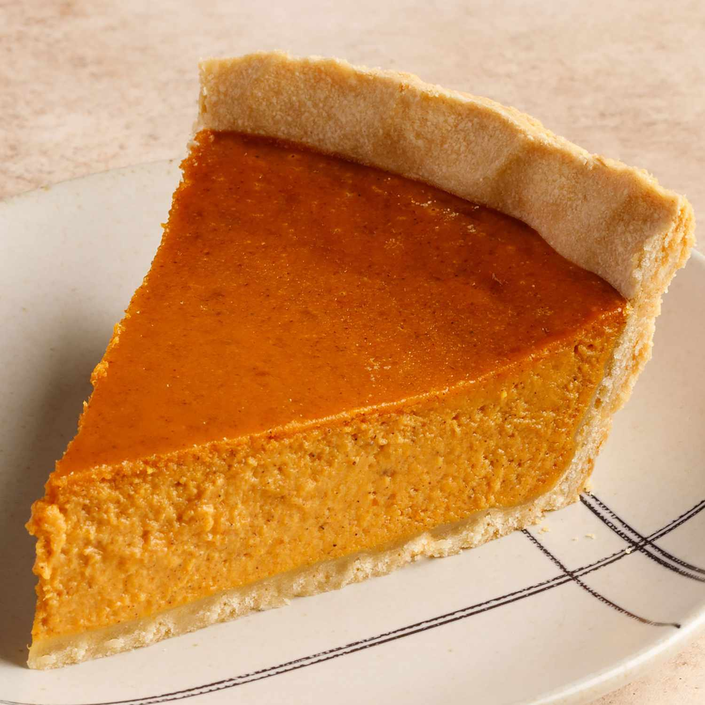

Libby's Pumpkin Pie

Description
Even on the can of pumpkin, this recipe is called "Famous Pumpkin Pie"!
Ingredients
- 3/4 cup granulated sugar
- 1/2 tsp. salt
- 1 tsp. ground cinnamon
- 1/2 tsp. ground ginger
- 1/4 tsp. ground cloves
- 2 large eggs
- 1 can (15 oz.) Libby's 100% pure pumpkin
- 1 can (12 fl. oz.) evaporated milk
- 1 unbaked 9-inch deep dish pie shell
Steps
- Mix sugar, salt, cinnamon, ginger, and cloves in small bowl. Beaat eggs in large bowl. Stir in pumpkin and sugar-spice mixture. Gradually stir in evaporated milk.
- Pour into pie shell.
- Bake in preheated 425-degree oven for 15 minutes. Reduce temperature to 350-degrees; bake for 40 - 50 minutes or until knife inserted near center comes out clean. Cool on wire rack for 2 hours. Ser immediately or refrigerate.